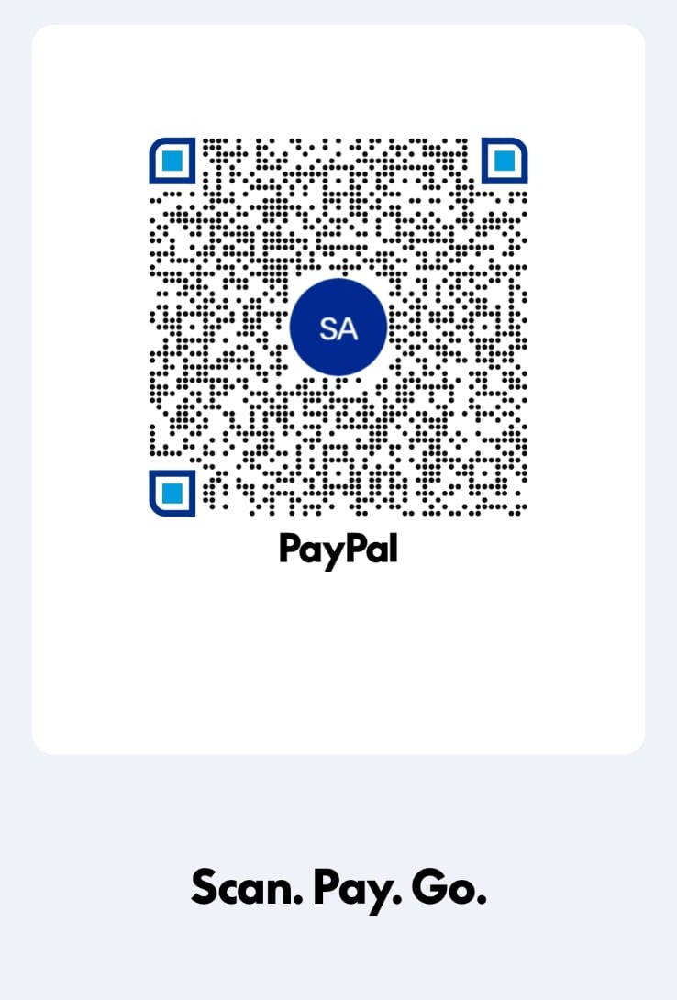

QuranLens
Donations are completely optional... and always welcome :D Your support helps keep QuranLens maintained for the Ummah.

Scan with your phone to open PayPal.
JazakAllahu khairan - every bit of kindness means a lot.
Privacy Policy